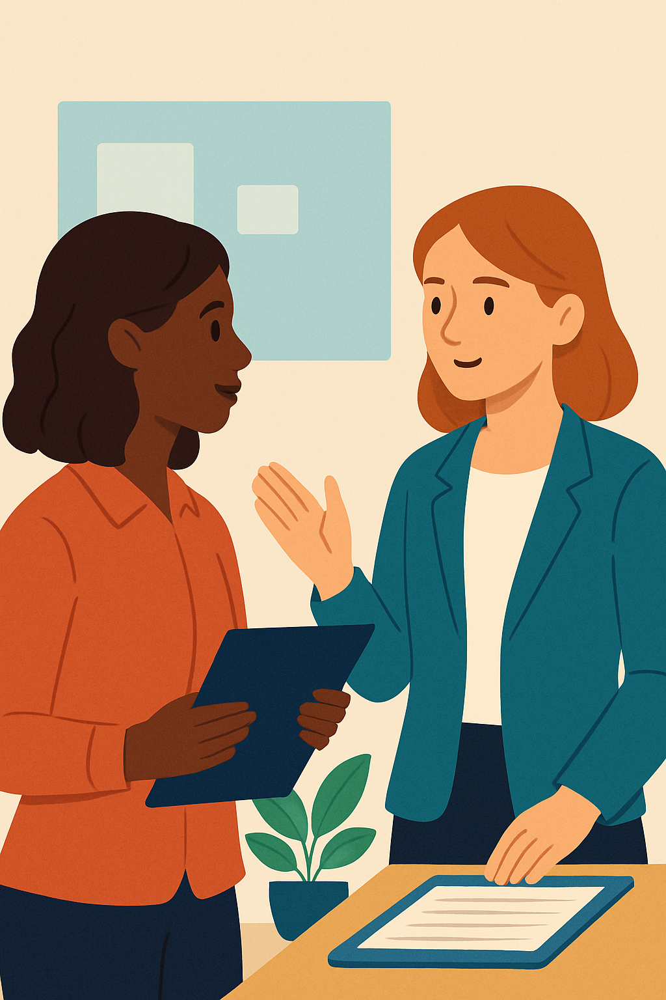

Unit 1, Session 3 – Writing Lesson: Talking About Work and Experiences
🧠 Writing Lesson: Talking About Work and Experiences
In Unit 1, you’ve explored workplace communication, from introducing yourself in Session 2 to mastering Past Simple and Present Perfect in Session 3. This writing lesson prepares you to describe your professional experiences, whether in social integration, logistics, or pre-primary education, for tasks like writing about your job or your first day at work. You’ll use the snapshot (Past Simple) and bridge (Present Perfect) metaphors to craft clear, professional texts.
🧠 Objective
This lesson helps you prepare for two writing tasks where you describe your job or studies and your first day at work. You’ll learn to organize ideas clearly, choose the right tenses, and express your thoughts in a natural and professional way.
🧱 1. Organizing Your Writing
A well-organised message has three clear paragraphs. Whether you’re talking about a typical day or your first day, the structure is similar:
| Paragraph | Focus | Example |
|---|---|---|
| 1 | Context: Where do you work/study? Who with? What is your role? | I work as a technician in a logistics company. My team is friendly and supportive. |
| 2 | Events: What do/did you do? | I usually check deliveries and prepare reports. Yesterday I attended a training session. |
| 3 | Feelings and Time: How do you feel? How long have you worked/studied in this field? | I enjoy my job a lot. I’ve worked in this field for three years. |
💡 Tip: Keep each paragraph short (2–3 sentences) and stay on topic.
🔧 2. Key Grammar Strategies
You’ll need to combine three verb tenses:
- Present Simple: for routines or descriptions
I usually start at 8. I work in a team. - Past Simple: for specific actions or events in the past
Yesterday I met my manager. I helped a colleague with a task. - Present Perfect: for experience and connection to the present
I’ve worked in customer service for two years. I’ve already finished the course.
🛠 Practice switching between tenses:
- I check reports every day. Yesterday, I attended a meeting. I’ve worked here since March.
🧰 3. Vocabulary Toolbox
Choose verbs and phrases relevant to your vocational field. Use this mini-bank as a guide:
Daily Tasks
- I check records / emails / stock.
- I help clients / students / customers.
- I prepare reports / materials / equipment.
Describing Your Day
- I had a meeting / training session / interview.
- I started a new project / met new people.
- It was a busy / exciting / typical day.
Expressing Feelings
- I felt nervous / tired / excited / confident.
- It was a rewarding / stressful / interesting day.
Time Phrases
- Yesterday, last week, in the morning
- For two years, since 2022, recently, just
🧭 4. Style and Tone
Use a personal but professional tone — especially for the final task (message to Charlie):
- ✔️ Use contractions naturally: I’ve just started / It’s a great team.
- ✔️ Avoid informal slang: Say “I was excited” not “I was super hyped.”
- ✔️ Be honest and reflective: I was a bit nervous, but everyone was kind.
✅ Final Writing Tips
Before you submit:
- ✔ Did you write three short paragraphs?
- ✔ Did you use at least 3 different verb tenses?
- ✔ Did you check for spelling, articles and punctuation?
- ✔ Is the text about 100–180 words (depending on the task)?
💭 Reflect
Picture yourself writing about your job or first day in your vocational field, like logistics or social integration. How would you use a snapshot (Past Simple) to describe a specific task you did? How would a bridge (Present Perfect) show your experience? How does organizing your writing in three paragraphs help you communicate clearly?
✨ Craft your work experiences into a compelling story with these writing skills!